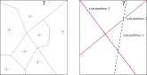

Why deep learning became relevant
In the last decade, there's been a widespread interest in artificial intelligence, particularly machine learning, and even more specifically deep learning. Curiously, this topic has not only resurged within academia but rather it has also been commonly showcased on non-technical mediums.
Why these topics became so popular now? Certainly, recent feats such as AlphaGo or Waymo may raise awareness and hint to potential implications in our social organization, especially in the labor sector. Still, but what underlying technical advances have enabled these achievements - and what makes deep learning a paradigm so relevant within the past few years?
In the aforementioned fields, one common task is to reason upon prior knowledge to derive plausible conclusions, a task known as inference. On this matter, strategies within artificial intelligence like expert systems had shared some success by encapsulating an expert's rationale into knowledge bases. These databases were then used by an inference engine, typically using logical rules, to reason out conclusions.
However, as tasks grow in complexity, performance becomes hindered by computational limitations of reaching a decision using an inference engine in a large database. Not just that, but the lack of satisfactory techniques for reasoning under uncertainty was also an important obstacle that hampered the further development of expert systems (Heathfield (1999)).
A different paradigm, brought forward by machine learning, is to derive the relationships needed for inference using observations. More importantly, these models must be able to generalize this behavior for unseen instances of the given problem. Oftentimes, these relationships within data can be quite convoluted and in recent decades, a class of learning algorithms came to attention by the ability to derive these mappings: local kernel methods.
This family of methods is a fairly recent grouping of techniques that have been developed independently for several years. They are called so due to the transformation performed so-called kernel function onto the input data, and some examples of models are Support Vector Machines, Gaussian processes, among other techniques. A local kernel method can be defined as:
$$f(x) = b + \sum^n_{i=1} \alpha_iK_D\left(x, x_i\right)$$
where $b$ is the bias term, $D$ is the set of observations of cardinality $n$, $α_i$ is scalar chosen by the learning algorithm upon $D$, $x_i$'s are the training input observations and $K_D$ is the kernel function. These methods are more effective than linear models by being able to generate more favorable representations of feature space by using kernels (usually non-linear), achieving fairly positive results in several applications.
Transformation of features to generate a linearly-separable decision space. On the left the original dataset with two classes. On the right a transformation using PCA with a Gaussian kernel.
One typical kernel function is the Gaussian kernel:
$$K_\sigma(u, v) = e^{-\frac{\left\Vert u-v \right\Vert^2}{2\sigma^{2}}}$$
where $\sigma^2$ is the equivalent of the variance in a gaussian probability density function. Note that the function is symmetric and as $u$ and $v$ become very distant from each other, the function approaches zero. This means that for the estimation of a query point $u$, the neighboring values of $u$ have much more influence than those further away from it.
As postulated by David Wolpert in his no free lunch theorem, no model performs better than random guess without any kind of assumption. Local kernel methods are no exception: they implicitly or explicitly partition the input space, obtaining good generalization for a new query point by exploiting the training examples in its neighborhood. This comes at the price of the so-called smoothness prior, meaning that these models expect a target function with little variation of results among neighboring observations.
We may insert additional priors through the choice of the kernel as well as the feature representation. This is why for these types of models it might be beneficial to generate alternative representations of the input data. Rather than using their raw representation, these modifications could more closely conform to the model smoothness prior, yielding better results. Although not targeted at handcrafting representations, Bengio et al. (2014) provides a thorough analysis of good characteristics for representations of features.
However, for particular types of problems the smoothness assumption may not hold, posing a predicament to this family of methods. As an illustration, consider the task of recognizing a character from a $\texttt{20×20}$ pixel grid. If we consider the number of variations of a simple horizontal translation, we notice that a particular observation of the letter $O$ has much more similarity with the letter $U$ in the exact position and orientation that the same letter $O$ shifted horizontally, for instance.
Demonstrations of the amount of variation among observations inter and intra-class.
This indicates that the target function may not be as smooth as expected. In this highly non-linear function, local kernel methods require a very large number of training examples to cover all the desired variations within a class. Hence, the number of necessary templates can grow exponentially with the intrinsic dimension of a class manifold (Bengio and Lecun (2007)).
The set of observations associated with the same class forms a manifold or a set of disjoint manifolds, i.e. regions of lower dimension than the original space of images. When this manifold is smooth, it can be approximated locally by linear patches, tangent to the manifold. However, as the manifold becomes irregular and highly dimensional, patches become smaller and exponentially many patches, as well as data, are required to obtain a good generalization. Source: Bengio (2009)
Note that this does not confront the ability of local kernel methods to approximate functions, rather their efficiency on approximating a function in regards to data. By contrast, neural network models are capable of dealing with intra-class variations more effortlessly. While each kernel function is activated in a small area of the input space, feature detectors of neural networks are capable of detecting certain patterns (edges or curvatures) almost independently from its orientation. The combination of these feature detectors is what makes neural network representations so efficient.
As an illustration, consider the task of representing a number from 0-8. The representation generated by local methods can be seen as a one-hot encoding, signaling that each representation is mutually exclusive, for instance, $\texttt{00000001}$ signals $1$ and $\texttt{00000010}$ signals $2$ but the representation $\texttt{00000011}$ does not convey any valid information. Conversely, a representation of a neural network can be seen as a binary representation, much more efficient: $\texttt{001}$ is equal to $1$, $\texttt{010}$ to 2 and $\texttt{011}$ to $3$.
In terms of classification, local methods produce mutually exclusive partitions onto the feature space which it oftentimes makes it difficult to generalize for unseen instances of the problem, if the target function is not smooth. On the other hand, neural networks generate several partitions which are compositional, presenting a more efficient decision surface that can be more robust to unseen query points.
Sketch of a partition of the feature space produced by local methods (left) and neural networks (right). Note that the sub-partitions of the right figure can be combined to infer unseen instances of the problem, represented by the symbol $?$. These sub-partitions can be seen as potential explanatory factors. As an illustration, these can be the color, shape, and texture in the task of detecting particular types of fruits. Conversely, the partitions on the left symbolize specific combinations of these factors that can indicate a certain fruit. Source: Bengio (2009)
The set of tasks illustrated so far are relatively simple in comparison to those that we see today, as in multi-class object detection. In previous decades, these simpler tasks were carried out relying on a shallow neural network architecture, i.e. using only a small number of layers. However, as the complexity of applications increase, this approach tends to fail.
Complex image classification tasks, for instance, pose a challenge to these methods namely because it becomes overwhelmingly difficult to combine a larger number of low-level features (pixels) to determine a contrasting abstract outcome (object). Alternatively, deep learning is able to better accomplish this task (Bradley (2010, pg. 22)), as experimental outlines in He et al. (2015) and Krizhevsky et al. (2012) indicate breakthrough performances upon increase in network depth.
Results of the 2012 ImageNet classification competition. Only the first out of 5 top models was a deep neural network, which achieved unprecedented performance. Source: ImageNet
Hierarchical learning, deep structured learning, or simply deep learning can be defined as a class of machine learning techniques that exploit many layers of non-linear units (Deng and Yu (2013, pg. 199)). This better capability is attained by the substantial coupling of non-linear operations, deriving complex feature hierarchies from low-level inputs.

Compositional representation of features throughout layers: from pixels to gradients and edges.
Source: Goodfellow et al. (2016, pg. 6)
As illustrated, different representations are synthesized along the layers and as representations become more related to the task in hand, the better the model can perform. However, how many layers are necessary to well approximate a function? In reality, the absolute number of layers is not the important factor, rather how many of these are necessary to effectively represent the target function, denominated as the compact representation. Moreover, if a configuration is smaller than the compact representation, that can generate a negative effect on performance.
It turns out that a configuration with one layer less than the compact representation may need an exponential number of neurons to achieve the same performance. This can be illustrated by the awarded work of Håstad (1986). By analogy, if we consider neural networks as simple logic circuits (which they are able to emulate), we can observe that a logic architecture limited in-depth presents an exponential number of components in comparison with a deep counterpart. Consider the calculation of the parity function, defined as:
$$f:\{0,1\}^{n}\rightarrow\{0,1\},\thinspace f(x)=\left(\overset{|x]}{\underset{i=1}{\sum}}x_{i}\right) mod\space 2$$
The number of logical components for a depth-limited architecture of 2 layers and $N$ inputs is of an order of $O(2^{N})$. On the other hand, unbounded architectures can produce less complex systems, such as the daisy-chain structure of complexity $O(N\thinspace log\thinspace N)$.
Distinct architectures to compute the parity function. A Disjunctive normal form structure (left) with a complexity of $2^{N-1}$ and a balanced tree structure (right) with 5 layers and complexity of $O(N\thinspace log\thinspace N)$.
Conversely, what could happen when freely adding more layers? In principle, besides the additional computational cost, this would not imply any counterpoints to approximating the target function, since the spare layers could simply replicate the second-to-last representation output. However, as in the shallow case, the model may carry too many parameters and insufficient training examples. This, in turn, would have statistical drawbacks: instead of approximating the desired mapping, the model starts to memorize the training data, causing overfitting, i.e. poor generalization1.
Despite the remarked capacity, deep architectures were not widely researched in the past as today. The reasons for this may encompass the former contemptuous view of researchers on this topic, or an insufficient computational power especially compared to contemporary standards. This, however, will not be covered in this series. The challenges of employing such architectures were also imposed by the difficulty in training neural networks with more than two layers, ultimately delivering poor generalization (Bengio et al. (2007))2.
In the next series of posts, I cover some of the improvements and predicaments that have followed the development of deep learning, starting from unsupervised pretraining.
1 This is a generally accepted consequence of very deep models that do not have enough training observations. However, recent research by Nakkiran et al. points to a completely different direction [return].
2 Bengio (2009, pg. 24) appropriately points out that Convolutional Neural Networks with up to seven layers did not suffer as other types of models. This may be due to what the author denominates as a Topographic Structure, suggesting that each neuron in a layer is associated with a small portion of the input. From this, two favorable aspects are hypothesized: the gradient is propagated less diffusely and this hierarchical local connectivity structure may be more suited for image recognition tasks, which is the most common use for such architecture [return].
References
- Heathfield, H. (1999). The rise and “fall” of expert systems in medicine. Expert Systems. 183–188.
- Wolpert, D. (1996), The Lack of A Priori Distinctions between Learning Algorithms. Neural Computation, 1341-1390.
- Bengio, Y., Courville, A. and Vincent, P. (2014). Representation Learning: A Review and New Perspectives
- Bengio, Y. and LeCun, Y. (2007). Scaling Learning Algorithms towards AI. 41.
- Bengio, Y. (2009). Learning Deep Architectures for AI. Foundations and Trends in Machine Learning. 1-127.
- Bengio, Y., Lamblin, P., Popovici, D., and Larochelle, H. (2007). Greedy Layer-Wise Training of Deep Networks. In Advances in Neural Information Processing Systems 19, 153-160.
- Bradley, D. M. (2010). Learning In Modular Systems. PhD Thesis, Carnegie Mellon University.
- Olah, C. (2014). Neural Networks, Manifolds, and Topology. Colah's blog
- Deng, L. and Yu, D. (2013). Deep Learning: Methods and Applications. Foundations and Trends in Signal Processing, 7-197.
- Krizhevsky, A., Sutskever, I., and Hinton, G. E. (2012). ImageNet Classification with Deep Convolutional Neural Networks. Advances in Neural Information Processing Systems 25, 1097-1105.
- He, K., Zhang, X., Ren, S., and Sun, J. (2015). Deep Residual Learning for Image Recognition. Proceedings of the IEEE conference on computer vision and pattern recognition.
- Goodfellow, I., Bengio, Y., and Courville, A. (2016). Deep Learning. MIT Press.
)